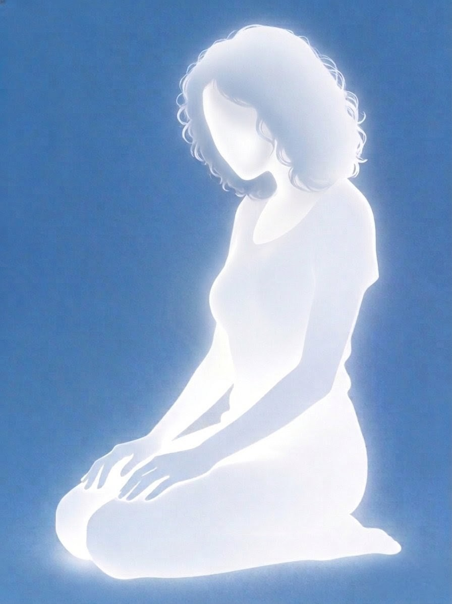

Solía contar un viejo junto a la fogata que, por los bosques nocturnos, se veían luces de un morado claro que llamaban la atención de viajeros y campesinos por igual. No solo por su tono incandescente y su brillo sin igual, sino por los caminos que se formaban con ellas, bellos e impresionantes.
Cuentos de viejos, decían. Asustar y ser escuchados, decían. Eso era lo que pensaba un joven de cabello lacio, aunque algo ondulado, de vestir formal incluso en días lluviosos, donde el agua y el lodo del campo fácilmente manchan la seda y el algodón.
Este muchacho, quien no permitía el menosprecio de nadie, pensó que su apariencia tranquila burlaría a los hombres apostadores de la mesa de juegos. Solo un tonto dejaría las monedas sobre la mesa y no tomaría una breve oportunidad.
No debería haber creído que sería fácil, pero lo hizo. Y entre el disgusto o la emoción que los apostadores sentían al ir corriendo tras él, había una seguridad de que sería atrapado y atacado por los mismos. Pues se dirigía, sin mucho cuidado, a lo más profundo del bosque, ese mismo que los ancianos tomaban como fantástico, como si de un cuento se tratara. Pensaban que alguien tan pequeño no podría durar mucho y que, tarde o temprano, saldría a recibir su merecido… o desaparecería dentro.
Un pequeño pueblo, una cerveza de lo más añeja y una buena fogata era lo que los abuelos disfrutaban mientras contaban historias a jóvenes mentes inocentes que creían todo. A diferencia de nuestro amigo, que mientras más se acercaba a dicho bosque, más confiado estaba de salir victorioso, pues no era fanático de los cuentos de hadas. Sin duda creía en los accidentes: una mala pisada en una rama curva bastó para terminar rodando colina abajo, llegando a donde la luz no podía tocar, incluso mientras la noche se acercaba.
Se detuvo bruscamente al estrellarse contra un árbol. Mala fue su suerte al tener un pedazo de madera, grueso y astillado, enterrado en el costado. Su peso hizo lo que debía y el mismo pedazo se partió. Siguió rodando, ahora herido y desangrándose. Al fin pudo sujetarse de un árbol con un brazo, mientras el otro sostenía su cuerpo adolorido. Quejidos y gemidos escapaban de él, pero nadie lo escuchaba, como si incluso aquellos hombres que lo persiguieron se hubieran esfumado.
Escurriendo sangre, cansado y en un bosque oscuro colina abajo, no tuvo más remedio que caminar para encontrar una salida. Poco a poco la agonía lo consumía y se reprochaba a sí mismo el dolor que pasaba solo por unas monedas y por la soberbia de creerse mejor. Pensaba que ni siquiera necesitaba el dinero, que todo fue por gusto y emoción.
Su sorpresa llegó cuando vio algo familiar: ramas y rocas iguales a las que había visto al caer. Se alivió y pensó que estaba subiendo. Su mente, desvariada por la pérdida de sangre, creyó que iba en ascenso. Caminó más y más hasta que un brillo alcanzó sus ojos.
¿Ese color?
Las historias de los viejos tenían algo de sentido. Fue solo un instante: un destello morado que se esfumó en la oscuridad. No le dio importancia y siguió caminando hasta llegar a la cascada más grande que había visto en su vida. Las rocas guiaban un pequeño río y la luna, postrada en lo alto, observaba cómo las nubes se dispersaban. Por un instante apreció el paisaje más bello que pudo imaginar. Caminó y pensó que podría descansar sobre una roca.
Mala fue su fortuna: era inestable. Terminó en un resbalón pequeño, pero directo a la cabeza. El golpe fue tan fuerte que pensó que el río se había callado.
No era más que el agua chorreando por sus oídos. El río lo llevaba de forma brusca en una dirección y, mientras no ponía resistencia, la luna se ocultaba entre las nubes. El miedo lo llenó al ver que iba directo a una grieta.
—No saldré de esta —pensó.
El agua era más fuerte que él y su cuerpo débil aceptó que todo había terminado. ¿Lo raro? Al entrar en la grieta, la corriente se sintió más ligera y una luz iluminó el lugar. Ya no era blanca como el reflejo del sol; era opaca, distinta. Mientras nadaba sin voluntad, sintió un golpe en la pierna. No fue un choque, sino el roce de un ser que se movía por debajo, baboso y ligero. Pronto sintió más y más.
Al cabo de un momento notó que aquellos seres no eran más que medusas. Sí, medusas de un morado claro que iluminaban la cueva, guiando sus pies cansados como si de un cuento mágico se tratase.
Lleno de emoción vio cómo avanzaban más dentro de la cueva e intentó seguirles el paso. El dolor no lo dejaba. De pronto, la corriente se volvió más fuerte, las medusas avanzaban más rápido y la presión en su cuerpo aumentó. Al borde de la muerte y sin forma de salir, aceptó su destino. Cerró los ojos y, tras ver a la última medusa alumbrar la cueva, flotando boca arriba, decidió morir de una vez.
Pero no. Para él aún no terminaba.
Al cabo de un rato despertó tosiendo, con agua en los pulmones. Asustado intentó levantarse, pero no pudo: algo se lo impedía, su cuerpo no reaccionaba. Había algo raro. No estaba flotando en la corriente como un animal, sino recostado sobre las rocas, con la cabeza apoyada en algo… en alguien.
Inmóvil, vio quién lo sostenía. Era una mujer.
Con muslos suaves como almohada y una presencia serena, se enamoró al instante. Al abrir mejor los ojos notó un cabello rizado y largo que caía hasta sus muslos. Sus manos, firmes y fuertes, tenían la paciencia suficiente para acariciar su rostro. Ella lo miraba directo a los ojos. Él notó un café brilloso en su mirada y, con una gran sonrisa, la mujer se acercó y le susurró:
—Ya puedes descansar.
El dolor en su costado había desaparecido. Las medusas no lo acompañaron: lo guiaron. Ella no le hacía daño; al contrario, lo cuidaba. Entonces entendió que esas luces nunca fueron mentira. Lo comprendió todo. Dejos caer su cuerpo y, rendido ante el hermoso rostro de la mujer, solo sonrió y poco a poco cerró los ojos. Al fin podía descansar.
